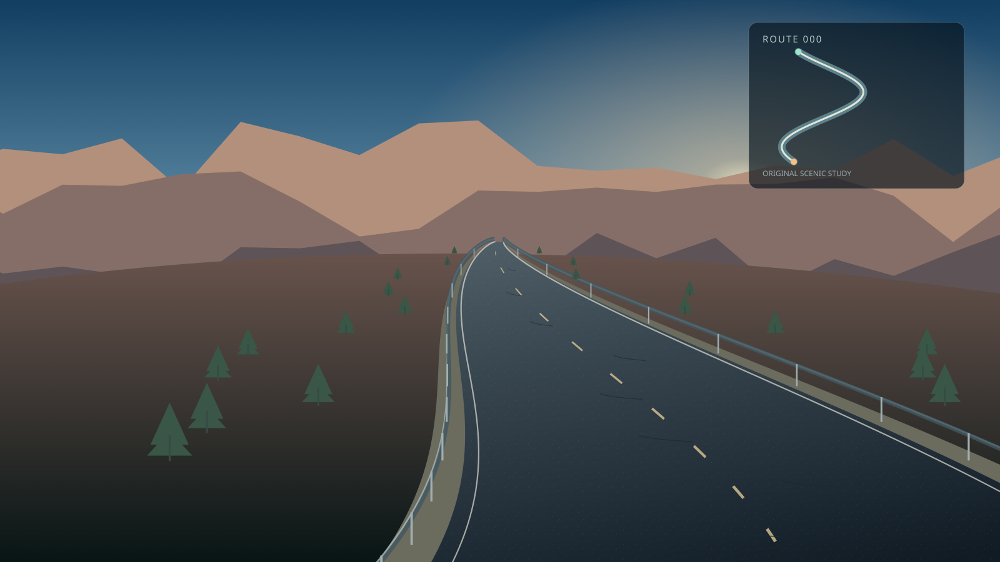
コースを探す
全256ステージはゲーム用の架空コースです。路面と距離で絞り込み、3コースまで比較できます。
テクニック （1）
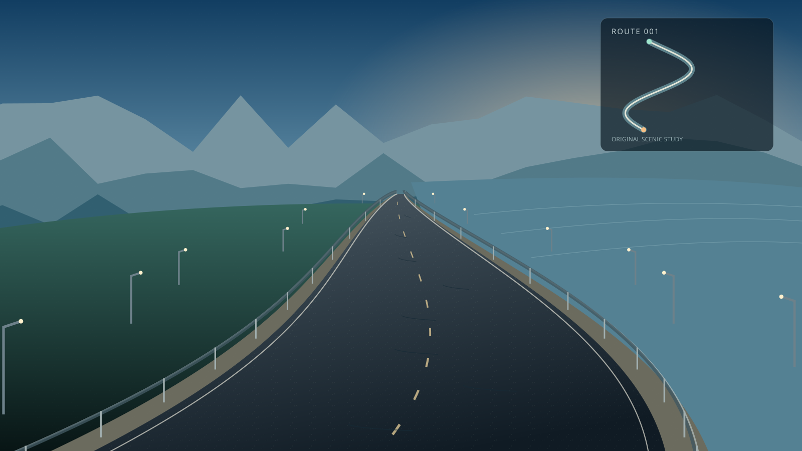
無限テクニックサーキット
1周 約2.6 km乾燥舗装ソロ専用時間制限なし
左右の連続コーナーと高速ストレートを何周でも走れます。ドリフト、安定したコーナリング、高速走行でZを獲得します。
このコースを選ぶ
100 km耐久 （1）
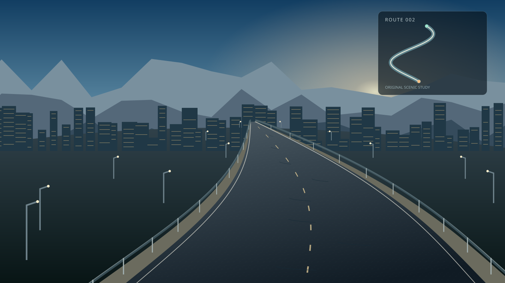
百里耐久ハイウェイ
100 kmボーナス耐久夜明け〜夕暮れ乾燥舗装ソロ専用
夜明けの湾岸から森林、赤岩峡谷、白い高原を越え、夕暮れの港へ。100 kmの高速道路を走破して最大の完走ボーナスを獲得。
完走報酬 1,000,000 Z
このコースを選ぶ
直線・サーキット （3）
峠・景観コース （21）
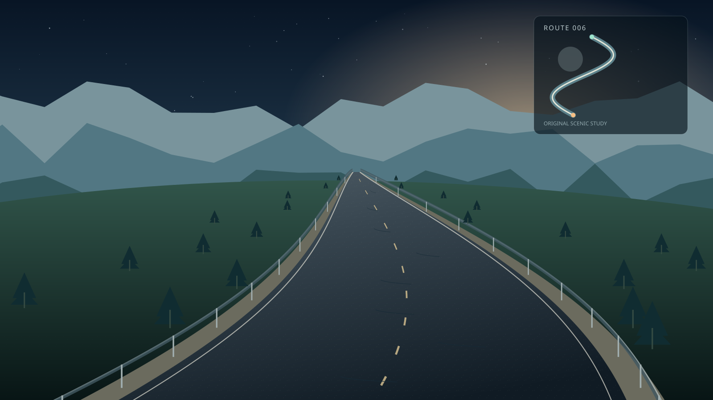
銀樹峠
3.2 km峠標準月夜ドライ
杉林を抜け、月明かりの下で連続ヘアピンを下る。
このコースを選ぶ霧沢峠
3.8 km渓谷上級夜雨ウェット
雨に濡れた路面と霧の谷。向きが変わるたびにグリップが問われる。
このコースを選ぶ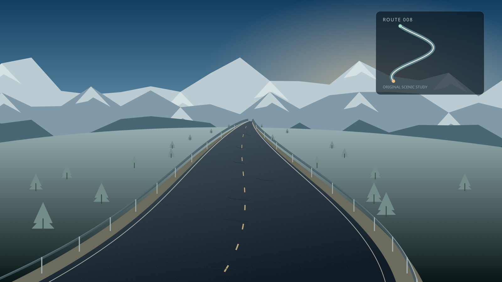
白峰峠
4.2 km雪山上級雪景色・夜明け冷えた舗装路
雪をまとった尾根に朝日が差す。ブラインドカーブと高速区間をつなぐ。
このコースを選ぶ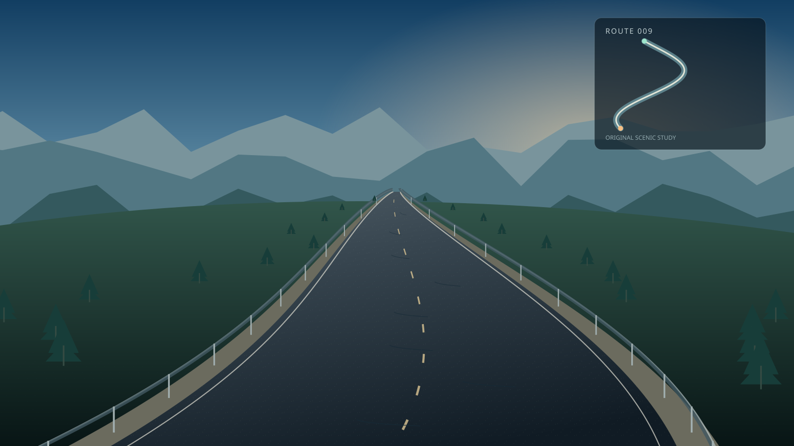
暁紅峠
2.72 km峠標準朝焼けドライ
朝焼けの鳥居から紅葉のつづら折りへ。序盤の緩い登りから一気に駆け下る。
このコースを選ぶ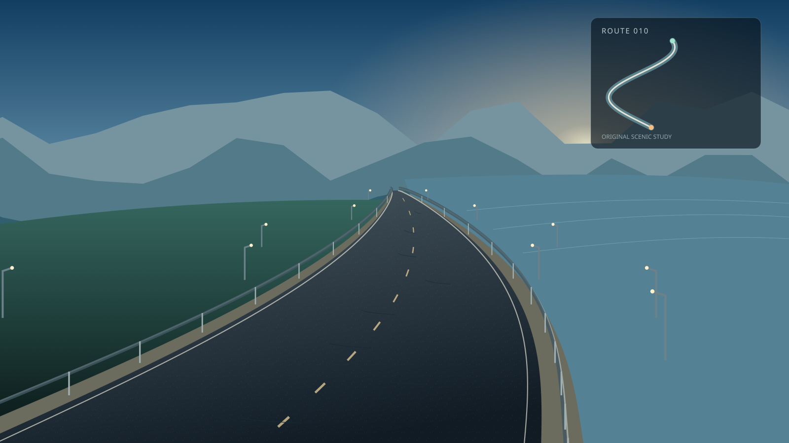
鷹嶺スカイライン
5.2 km高原初級快晴ドライ
空の近い稜線を走る高速コース。長い登坂と開けた直線の先に、複合コーナーが待つ。
このコースを選ぶ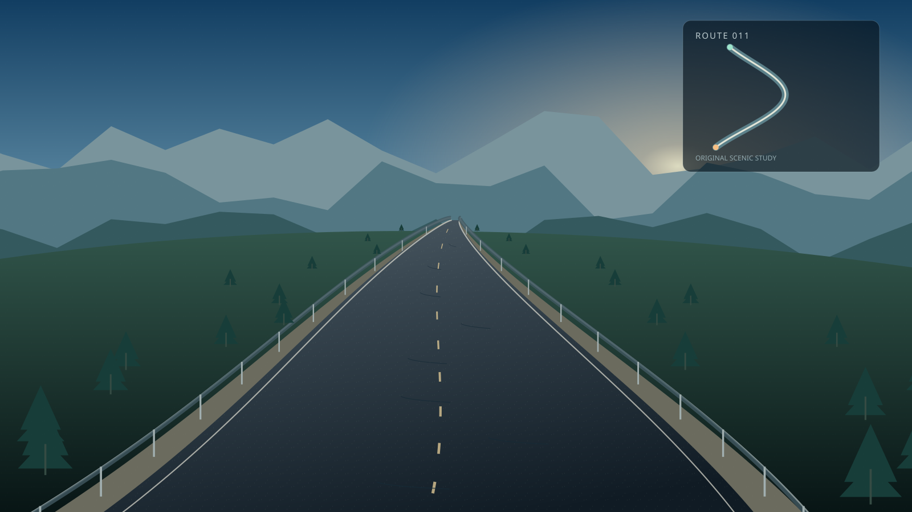
青羽の森公道
3 km森林標準春晴れドライ
芽吹いた広葉樹と石垣の間を縫う中速コース。林を抜けるたびに車線のリズムが変わる。
このコースを選ぶ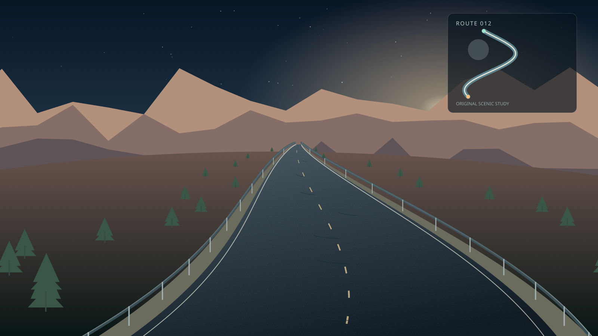
黒鉄峡谷線
4.64 km渓谷上級曇天石粉の舗装
灰色の花崗岩と旧鉄道の橋脚。短い坑道を抜けた後、谷底へ向かう狭い切り返しが続く。
このコースを選ぶ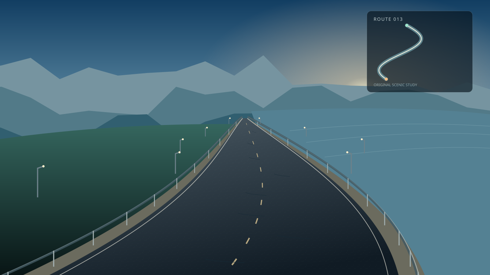
潮崎岬ライン
4.12 km海岸初級夕焼けドライ
茜色の海を見下ろす断崖の道。灯台のある岬を回る長いコーナーが名物。
このコースを選ぶ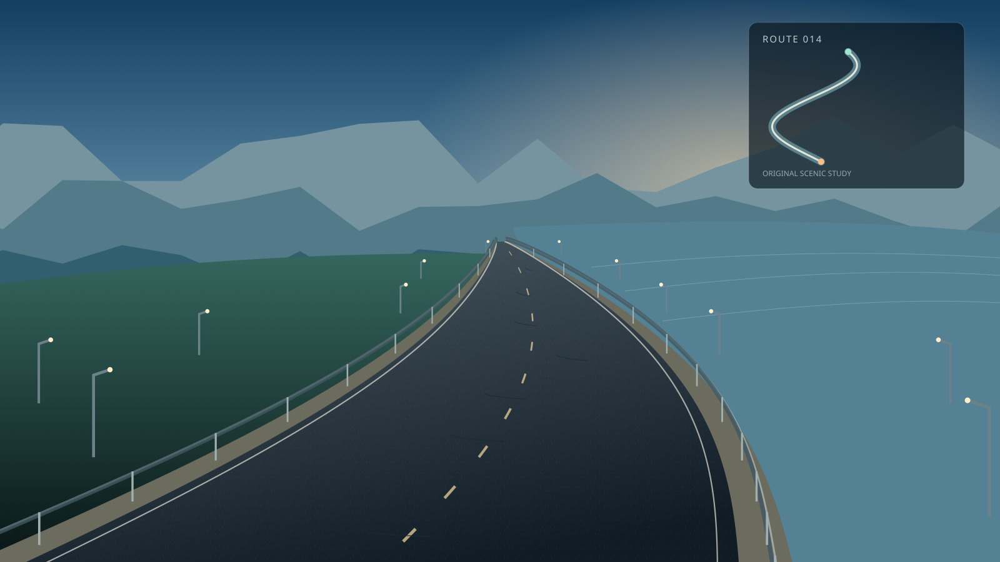
三日月海岸道路
3.512 km海岸標準海霧の月夜ドライ
月の光を映す海岸線。岩をよける短い曲がり角と、岬の先まで続くストレート。
このコースを選ぶ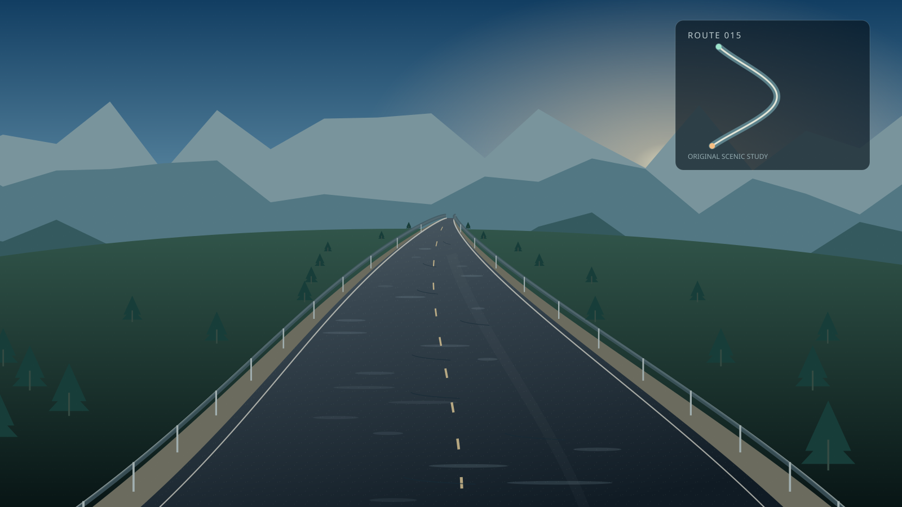
若葉杉林峠
3.72 km森林上級雨ウェット
雨粒が光る杉林を下る。濡れた石橋から始まる二段コーナーでは早めの減速が必要。
このコースを選ぶ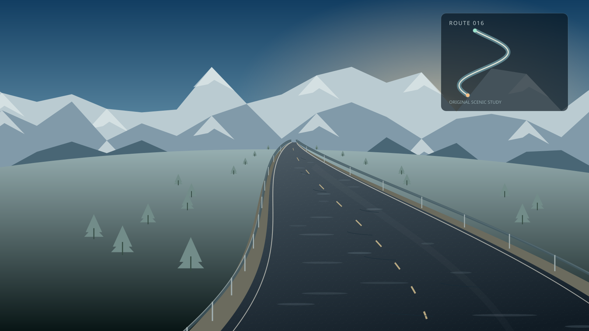
雨露宿場街道
2.4 km市街地標準夜雨濡れた街道
行灯が濡れた路面を照らす旧宿場。短い路地と幅の広い大通りの速度差を攻略する。
このコースを選ぶ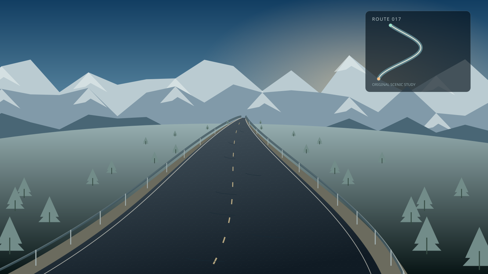
楪もみじ参道
4 km森林上級秋晴れ落ち葉の舗装
橙色の紅葉に囲まれた参道。道の勾配の切替と、左右に連続するカーブでリズムを取る。
このコースを選ぶ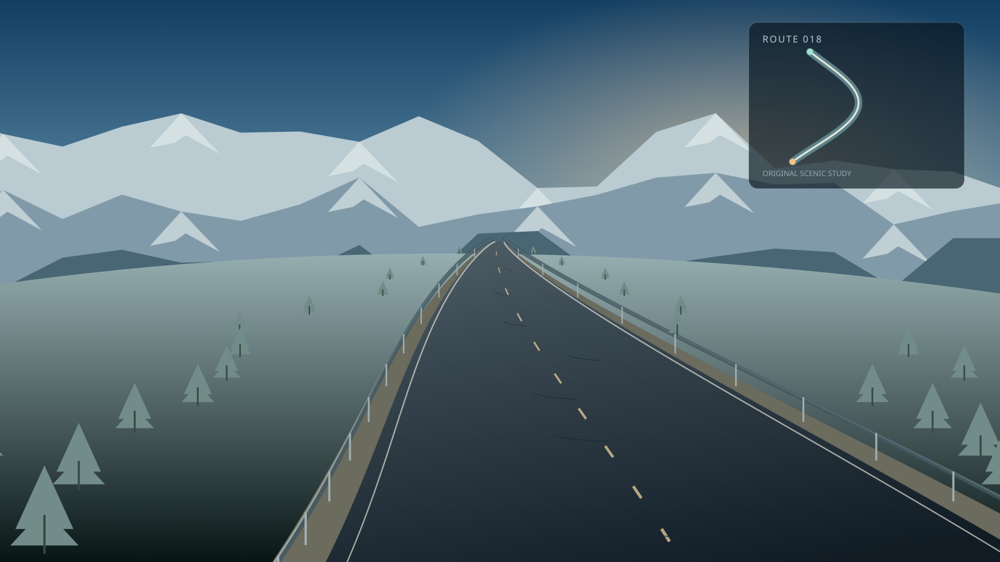
早坂の牧草地
5.8 km高原初級午後の晴天ドライ
収穫期の草原と木造の納屋を抜けるロングコース。広い道幅と長い直線で高速走行を楽しめる。
このコースを選ぶ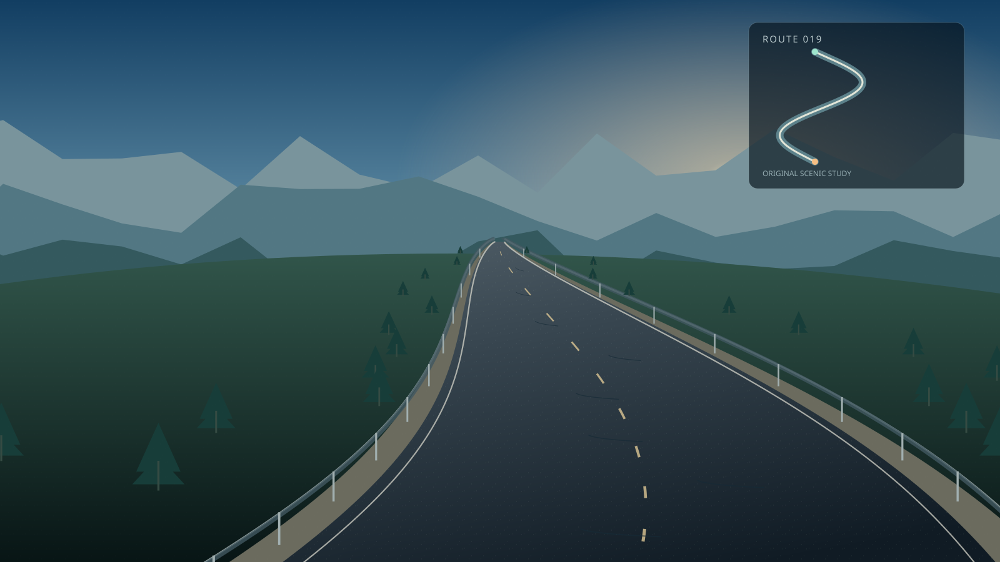
水上貯水湖道路
4.9 km渓谷標準薄暮ドライ
湖面を横断する朱色の長大橋。水辺の緩いコーナーから山側の切り返しへつながる。
このコースを選ぶ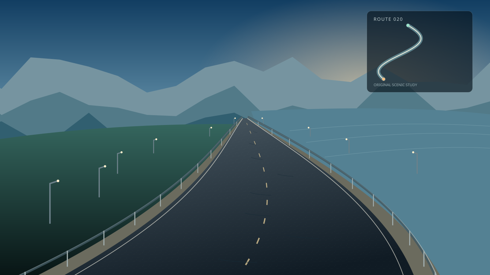
雲隠の石塔峠
4.56 km峠上級濃霧・朝湿った舗装
雲海に浮かぶ石塔を目指す長い登り。視界が開ける稜線までは曲線の先を読みづらい。
このコースを選ぶ雪代峠
4.5 km雪山上級雪晴れ凍結気味の舗装
粉雪の白さが青空に映える登り坂。山荘の先には高速の曲がり角と日陰の凍結路面。
このコースを選ぶ冬凪夜雪街道
3.64 km雪山上級夜雪冷えた舗装路
深い青の夜に雪が舞う。木の橋を過ぎると林の中へ入り、きつい切り返しが待つ。
このコースを選ぶ木枯らし道
6.2 km雪山上級雪雲冷えた舗装路
雪雲と稜線の間を走る長距離高原路。雪よけの覆いを抜けた先で高速区間に入る。
このコースを選ぶ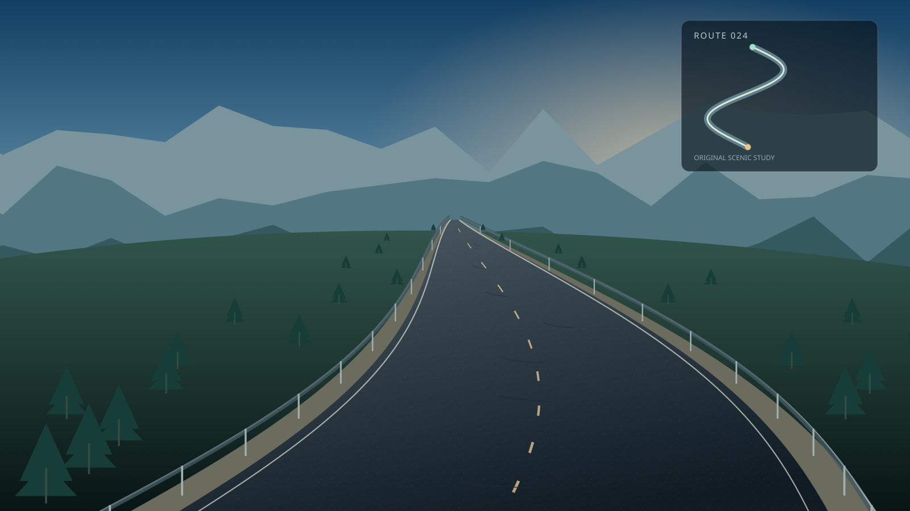
凪輪サーキット
2.8 km森林標準初夏の晴天ドライ
竹林の木漏れ日と石段の間を走る。路肩の狭いコーナーを丁寧につないでタイムを削る。
このコースを選ぶ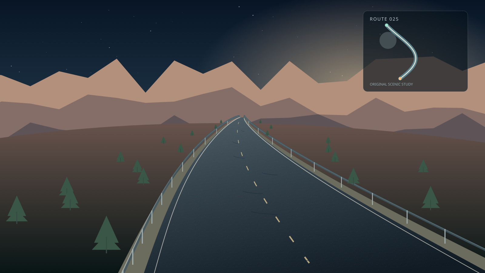
玉平石垣峡
4.08 km渓谷上級赤い薄暮ドライ
夕暮れに赤く染まる岩壁と古い石積み。岩の張り出しを回る鋭いカーブが連続する。
このコースを選ぶ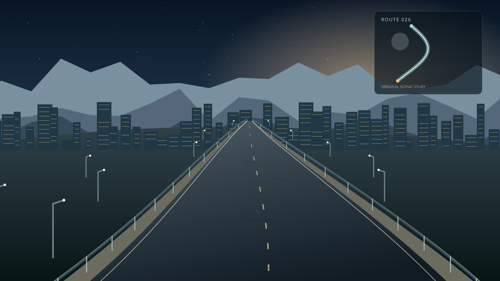
月島旧港ルート
3.216 km市街地標準港の夜景ドライ
古い倉庫と燈籠の間を通る港町ルート。岸壁沿いの長いカーブから街区の切り返しへ。
このコースを選ぶ
Zボーナス （98）
表示はコース分の追加額です。完走報酬のしくみも確認できます。
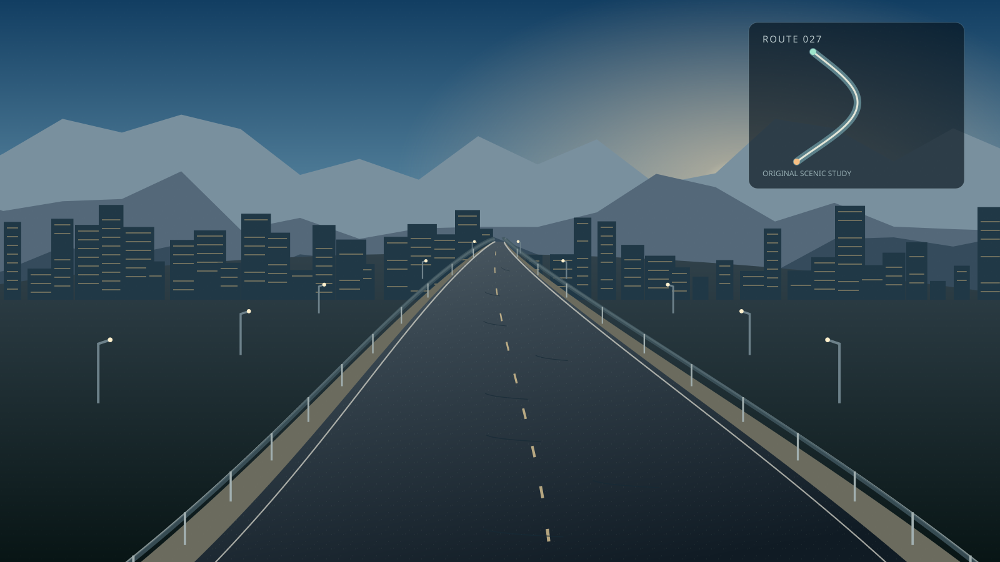
湾岸光路ロングストレート
30 kmZボーナス長距離湾岸の薄暮乾燥舗装ソロ専用
港の灯と海面を横に見ながら、湾岸の30 kmを一直線に走り抜ける。
完走ボーナス +1,200,000 Z（固定額）
このコースを選ぶ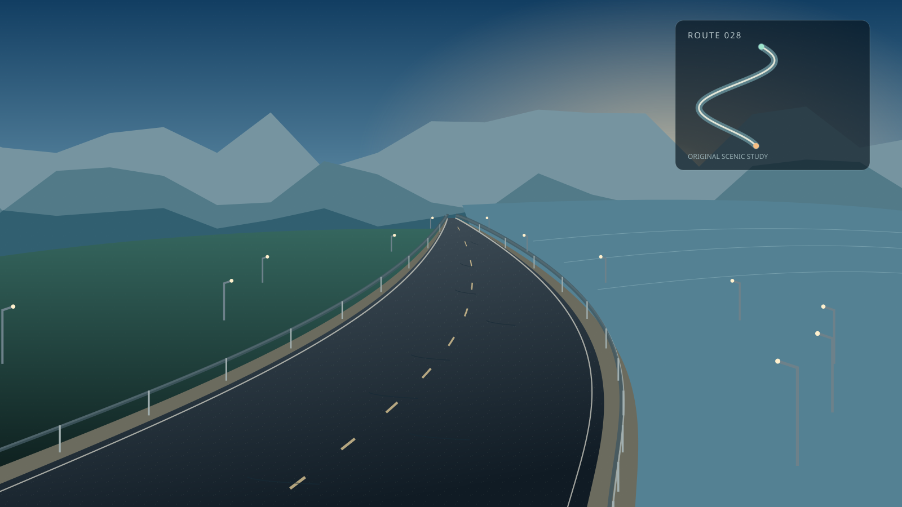
黄金整備ヤード
1.2 kmボーナス標準金色の薄暮乾燥舗装
古い整備工場を縫う短い技術コース。ヘアピンと二段の切り返しを抜け、完走でボーナスZを獲得。
完走ボーナス +20,700 Z
このコースを選ぶ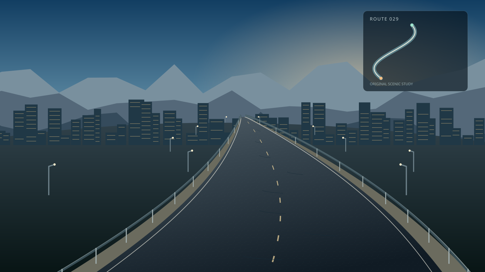
蒼天テストウェイ
2 kmボーナス初級蒼天試験路舗装
湖畔の高速試験路。緩いカーブと長い直線が続き、計時塔の先まで完走するとボーナスZを獲得。
完走ボーナス +29,400 Z
このコースを選ぶ琥珀製材所・発進計測区
0.72 kmボーナス初級午後の晴天摩耗した舗装
製材所と古い整備工場を抜ける短距離ルート。広い直線で発進と早い変速を試す。
完走ボーナス +13,500 Z
このコースを選ぶ琥珀製材所・制動ライン
1.1 kmボーナス初級午後の晴天摩耗した舗装
製材所と古い整備工場を抜ける短距離ルート。加速直後に弧を描くブレーキ区間へ入る。
完走ボーナス +18,000 Z
このコースを選ぶ琥珀製材所・切り返しスプリント
1.4 kmボーナス初級午後の晴天摩耗した舗装
製材所と古い整備工場を抜ける短距離ルート。左右に振れる短いS字と最後の加速区間。
完走ボーナス +21,900 Z
このコースを選ぶ琥珀製材所・外周高速弧
2.3 kmボーナス標準午後の晴天摩耗した舗装
製材所と古い整備工場を抜ける連続コーナールート。外周の大きな弧と高速の切り返しをつなぐ。
完走ボーナス +35,400 Z
このコースを選ぶ琥珀製材所・二連シケイン
2.528 kmボーナス標準午後の晴天摩耗した舗装
製材所と古い整備工場を抜ける連続コーナールート。向きが逆の二連シケインと長いリカバリー区間。
完走ボーナス +38,700 Z
このコースを選ぶ琥珀製材所・内周ヘアピン
2.928 kmボーナス上級午後の晴天摩耗した舗装
製材所と古い整備工場を抜ける連続コーナールート。半径の違うタイトな弧が連続するテクニカルレイアウト。
完走ボーナス +48,300 Z
このコースを選ぶ琥珀製材所・乾湿切替区
2.818 kmボーナス標準午後の晴天摩擦の異なる区間
製材所と古い整備工場を抜ける複合路面ルート。乾いたアプローチから湿ったタイヤ計測区に入る。
完走ボーナス +42,900 Z
このコースを選ぶ琥珀製材所・砂塵テスト
3.156 kmボーナス上級午後の晴天摩擦の異なる区間
製材所と古い整備工場を抜ける複合路面ルート。砂の浮いた切り返しではブレーキを早めに入れる。
完走ボーナス +52,200 Z
このコースを選ぶ琥珀製材所・低グリップ横断区
3.626 kmボーナス上級午後の晴天摩擦の異なる区間
製材所と古い整備工場を抜ける複合路面ルート。低摩擦区間と再加速区間を往復してグリップを試す。
完走ボーナス +58,800 Z
このコースを選ぶ琥珀製材所・高速巡航帯
4.716 kmボーナス標準午後の晴天摩耗した舗装
製材所と古い整備工場を抜ける長距離ルート。高速巡航向けの長い区間に、二つの緩い曲線を組み合わせた。
完走ボーナス +68,400 Z
このコースを選ぶ琥珀製材所・総合耐久路
5.764 kmボーナス上級午後の晴天摩耗した舗装
製材所と古い整備工場を抜ける長距離ルート。前半の連続コーナーから後半の巡航へと性格が変わる。
完走ボーナス +90,300 Z
このコースを選ぶ琥珀製材所・グランドラン
7.024 kmボーナス上級午後の晴天摩耗した舗装
製材所と古い整備工場を抜ける長距離ルート。緩急の違うカーブと長い直線をすべて走り切る最長レイアウト。
完走ボーナス +108,300 Z
このコースを選ぶ錆波埠頭・発進計測区
0.852 kmボーナス初級夜霧濡れた港湾路
旧倉庫と霧の灯台を抜ける短距離ルート。広い直線で発進と早い変速を試す。
完走ボーナス +16,500 Z
このコースを選ぶ錆波埠頭・制動ライン
1.04 kmボーナス初級夜霧濡れた港湾路
旧倉庫と霧の灯台を抜ける短距離ルート。加速直後に弧を描くブレーキ区間へ入る。
完走ボーナス +18,900 Z
このコースを選ぶ錆波埠頭・切り返しスプリント
1.34 kmボーナス初級夜霧濡れた港湾路
旧倉庫と霧の灯台を抜ける短距離ルート。左右に振れる短いS字と最後の加速区間。
完走ボーナス +23,100 Z
このコースを選ぶ錆波埠頭・外周高速弧
2.24 kmボーナス標準夜霧濡れた港湾路
旧倉庫と霧の灯台を抜ける連続コーナールート。外周の大きな弧と高速の切り返しをつなぐ。
完走ボーナス +37,800 Z
このコースを選ぶ錆波埠頭・二連シケイン
2.66 kmボーナス標準夜霧濡れた港湾路
旧倉庫と霧の灯台を抜ける連続コーナールート。向きが逆の二連シケインと長いリカバリー区間。
完走ボーナス +43,800 Z
このコースを選ぶ錆波埠頭・内周ヘアピン
2.868 kmボーナス上級夜霧濡れた港湾路
旧倉庫と霧の灯台を抜ける連続コーナールート。半径の違うタイトな弧が連続するテクニカルレイアウト。
完走ボーナス +51,600 Z
このコースを選ぶ錆波埠頭・乾湿切替区
2.758 kmボーナス標準夜霧摩擦の異なる区間
旧倉庫と霧の灯台を抜ける複合路面ルート。乾いたアプローチから湿ったタイヤ計測区に入る。
完走ボーナス +45,900 Z
このコースを選ぶ錆波埠頭・砂塵テスト
3.288 kmボーナス上級夜霧摩擦の異なる区間
旧倉庫と霧の灯台を抜ける複合路面ルート。砂の浮いた切り返しではブレーキを早めに入れる。
完走ボーナス +58,500 Z
このコースを選ぶ錆波埠頭・低グリップ横断区
3.566 kmボーナス上級夜霧摩擦の異なる区間
旧倉庫と霧の灯台を抜ける複合路面ルート。低摩擦区間と再加速区間を往復してグリップを試す。
完走ボーナス +63,000 Z
このコースを選ぶ錆波埠頭・高速巡航帯
4.656 kmボーナス標準夜霧濡れた港湾路
旧倉庫と霧の灯台を抜ける長距離ルート。高速巡航向けの長い区間に、二つの緩い曲線を組み合わせた。
完走ボーナス +73,500 Z
このコースを選ぶ錆波埠頭・総合耐久路
5.896 kmボーナス上級夜霧濡れた港湾路
旧倉庫と霧の灯台を抜ける長距離ルート。前半の連続コーナーから後半の巡航へと性格が変わる。
完走ボーナス +99,900 Z
このコースを選ぶ錆波埠頭・グランドラン
6.964 kmボーナス上級夜霧濡れた港湾路
旧倉庫と霧の灯台を抜ける長距離ルート。緩急の違うカーブと長い直線をすべて走り切る最長レイアウト。
完走ボーナス +116,700 Z
このコースを選ぶ鉄影渓谷・発進計測区
0.792 kmボーナス初級曇天石粉の舗装
鉄道跡と岩壁の間を抜ける短距離ルート。広い直線で発進と早い変速を試す。
完走ボーナス +14,400 Z
このコースを選ぶ鉄影渓谷・制動ライン
1.172 kmボーナス初級曇天石粉の舗装
鉄道跡と岩壁の間を抜ける短距離ルート。加速直後に弧を描くブレーキ区間へ入る。
完走ボーナス +18,900 Z
このコースを選ぶ鉄影渓谷・切り返しスプリント
1.28 kmボーナス初級曇天石粉の舗装
鉄道跡と岩壁の間を抜ける短距離ルート。左右に振れる短いS字と最後の加速区間。
完走ボーナス +20,700 Z
このコースを選ぶ鉄影渓谷・外周高速弧
2.18 kmボーナス標準曇天石粉の舗装
鉄道跡と岩壁の間を抜ける連続コーナールート。外周の大きな弧と高速の切り返しをつなぐ。
完走ボーナス +33,900 Z
このコースを選ぶ鉄影渓谷・二連シケイン
2.6 kmボーナス標準曇天石粉の舗装
鉄道跡と岩壁の間を抜ける連続コーナールート。向きが逆の二連シケインと長いリカバリー区間。
完走ボーナス +39,600 Z
このコースを選ぶ鉄影渓谷・内周ヘアピン
3 kmボーナス上級曇天石粉の舗装
鉄道跡と岩壁の間を抜ける連続コーナールート。半径の違うタイトな弧が連続するテクニカルレイアウト。
完走ボーナス +49,500 Z
このコースを選ぶ鉄影渓谷・乾湿切替区
2.698 kmボーナス標準曇天摩擦の異なる区間
鉄道跡と岩壁の間を抜ける複合路面ルート。乾いたアプローチから湿ったタイヤ計測区に入る。
完走ボーナス +41,100 Z
このコースを選ぶ鉄影渓谷・砂塵テスト
3.228 kmボーナス上級曇天摩擦の異なる区間
鉄道跡と岩壁の間を抜ける複合路面ルート。砂の浮いた切り返しではブレーキを早めに入れる。
完走ボーナス +52,800 Z
このコースを選ぶ鉄影渓谷・低グリップ横断区
3.698 kmボーナス上級曇天摩擦の異なる区間
鉄道跡と岩壁の間を抜ける複合路面ルート。低摩擦区間と再加速区間を往復してグリップを試す。
完走ボーナス +60,000 Z
このコースを選ぶ鉄影渓谷・高速巡航帯
4.596 kmボーナス標準曇天石粉の舗装
鉄道跡と岩壁の間を抜ける長距離ルート。高速巡航向けの長い区間に、二つの緩い曲線を組み合わせた。
完走ボーナス +66,900 Z
このコースを選ぶ鉄影渓谷・総合耐久路
5.836 kmボーナス上級曇天石粉の舗装
鉄道跡と岩壁の間を抜ける長距離ルート。前半の連続コーナーから後半の巡航へと性格が変わる。
完走ボーナス +91,500 Z
このコースを選ぶ鉄影渓谷・グランドラン
7.096 kmボーナス上級曇天石粉の舗装
鉄道跡と岩壁の間を抜ける長距離ルート。緩急の違うカーブと長い直線をすべて走り切る最長レイアウト。
完走ボーナス +109,500 Z
このコースを選ぶ御影杉道・発進計測区
0.732 kmボーナス初級小雨湿った舗装
杉林と石造りの参道を抜ける短距離ルート。広い直線で発進と早い変速を試す。
完走ボーナス +14,700 Z
このコースを選ぶ御影杉道・制動ライン
1.112 kmボーナス初級小雨湿った舗装
杉林と石造りの参道を抜ける短距離ルート。加速直後に弧を描くブレーキ区間へ入る。
完走ボーナス +19,800 Z
このコースを選ぶ御影杉道・切り返しスプリント
1.412 kmボーナス初級小雨湿った舗装
杉林と石造りの参道を抜ける短距離ルート。左右に振れる短いS字と最後の加速区間。
完走ボーナス +24,000 Z
このコースを選ぶ御影杉道・外周高速弧
2.12 kmボーナス標準小雨湿った舗装
杉林と石造りの参道を抜ける連続コーナールート。外周の大きな弧と高速の切り返しをつなぐ。
完走ボーナス +36,000 Z
このコースを選ぶ御影杉道・二連シケイン
2.54 kmボーナス標準小雨湿った舗装
杉林と石造りの参道を抜ける連続コーナールート。向きが逆の二連シケインと長いリカバリー区間。
完走ボーナス +42,300 Z
このコースを選ぶ御影杉道・内周ヘアピン
2.94 kmボーナス上級小雨湿った舗装
杉林と石造りの参道を抜ける連続コーナールート。半径の違うタイトな弧が連続するテクニカルレイアウト。
完走ボーナス +52,800 Z
このコースを選ぶ御影杉道・乾湿切替区
2.83 kmボーナス標準小雨摩擦の異なる区間
杉林と石造りの参道を抜ける複合路面ルート。乾いたアプローチから湿ったタイヤ計測区に入る。
完走ボーナス +46,500 Z
このコースを選ぶ御影杉道・砂塵テスト
3.168 kmボーナス上級小雨摩擦の異なる区間
杉林と石造りの参道を抜ける複合路面ルート。砂の浮いた切り返しではブレーキを早めに入れる。
完走ボーナス +56,700 Z
このコースを選ぶ御影杉道・低グリップ横断区
3.638 kmボーナス上級小雨摩擦の異なる区間
杉林と石造りの参道を抜ける複合路面ルート。低摩擦区間と再加速区間を往復してグリップを試す。
完走ボーナス +64,200 Z
このコースを選ぶ御影杉道・高速巡航帯
4.728 kmボーナス標準小雨湿った舗装
杉林と石造りの参道を抜ける長距離ルート。高速巡航向けの長い区間に、二つの緩い曲線を組み合わせた。
完走ボーナス +74,700 Z
このコースを選ぶ御影杉道・総合耐久路
5.776 kmボーナス上級小雨湿った舗装
杉林と石造りの参道を抜ける長距離ルート。前半の連続コーナーから後半の巡航へと性格が変わる。
完走ボーナス +98,400 Z
このコースを選ぶ御影杉道・グランドラン
7.036 kmボーナス上級小雨湿った舗装
杉林と石造りの参道を抜ける長距離ルート。緩急の違うカーブと長い直線をすべて走り切る最長レイアウト。
完走ボーナス +117,900 Z
このコースを選ぶ薫風牧柵・発進計測区
0.864 kmボーナス初級初夏の快晴乾燥舗装
牧草地と木造の納屋を抜ける短距離ルート。広い直線で発進と早い変速を試す。
完走ボーナス +15,000 Z
このコースを選ぶ薫風牧柵・制動ライン
1.052 kmボーナス初級初夏の快晴乾燥舗装
牧草地と木造の納屋を抜ける短距離ルート。加速直後に弧を描くブレーキ区間へ入る。
完走ボーナス +17,700 Z
このコースを選ぶ薫風牧柵・切り返しスプリント
1.352 kmボーナス初級初夏の快晴乾燥舗装
牧草地と木造の納屋を抜ける短距離ルート。左右に振れる短いS字と最後の加速区間。
完走ボーナス +21,300 Z
このコースを選ぶ薫風牧柵・外周高速弧
2.252 kmボーナス標準初夏の快晴乾燥舗装
牧草地と木造の納屋を抜ける連続コーナールート。外周の大きな弧と高速の切り返しをつなぐ。
完走ボーナス +34,800 Z
このコースを選ぶ薫風牧柵・二連シケイン
2.48 kmボーナス標準初夏の快晴乾燥舗装
牧草地と木造の納屋を抜ける連続コーナールート。向きが逆の二連シケインと長いリカバリー区間。
完走ボーナス +37,800 Z
このコースを選ぶ薫風牧柵・内周ヘアピン
2.88 kmボーナス上級初夏の快晴乾燥舗装
牧草地と木造の納屋を抜ける連続コーナールート。半径の違うタイトな弧が連続するテクニカルレイアウト。
完走ボーナス +47,400 Z
このコースを選ぶ薫風牧柵・乾湿切替区
2.77 kmボーナス標準初夏の快晴摩擦の異なる区間
牧草地と木造の納屋を抜ける複合路面ルート。乾いたアプローチから湿ったタイヤ計測区に入る。
完走ボーナス +42,000 Z
このコースを選ぶ薫風牧柵・砂塵テスト
3.3 kmボーナス上級初夏の快晴摩擦の異なる区間
牧草地と木造の納屋を抜ける複合路面ルート。砂の浮いた切り返しではブレーキを早めに入れる。
完走ボーナス +53,700 Z
このコースを選ぶ薫風牧柵・低グリップ横断区
3.578 kmボーナス上級初夏の快晴摩擦の異なる区間
牧草地と木造の納屋を抜ける複合路面ルート。低摩擦区間と再加速区間を往復してグリップを試す。
完走ボーナス +58,500 Z
このコースを選ぶ薫風牧柵・高速巡航帯
4.668 kmボーナス標準初夏の快晴乾燥舗装
牧草地と木造の納屋を抜ける長距離ルート。高速巡航向けの長い区間に、二つの緩い曲線を組み合わせた。
完走ボーナス +67,500 Z
このコースを選ぶ薫風牧柵・総合耐久路
5.908 kmボーナス上級初夏の快晴乾燥舗装
牧草地と木造の納屋を抜ける長距離ルート。前半の連続コーナーから後半の巡航へと性格が変わる。
完走ボーナス +92,400 Z
このコースを選ぶ薫風牧柵・グランドラン
6.976 kmボーナス上級初夏の快晴乾燥舗装
牧草地と木造の納屋を抜ける長距離ルート。緩急の違うカーブと長い直線をすべて走り切る最長レイアウト。
完走ボーナス +108,000 Z
このコースを選ぶ硝子の水源・発進計測区
0.804 kmボーナス初級青い薄暮湖畔舗装
湖面を望む計時塔と水門を抜ける短距離ルート。広い直線で発進と早い変速を試す。
完走ボーナス +14,400 Z
このコースを選ぶ硝子の水源・制動ライン
1.184 kmボーナス初級青い薄暮湖畔舗装
湖面を望む計時塔と水門を抜ける短距離ルート。加速直後に弧を描くブレーキ区間へ入る。
完走ボーナス +19,200 Z
このコースを選ぶ硝子の水源・切り返しスプリント
1.292 kmボーナス初級青い薄暮湖畔舗装
湖面を望む計時塔と水門を抜ける短距離ルート。左右に振れる短いS字と最後の加速区間。
完走ボーナス +20,700 Z
このコースを選ぶ硝子の水源・外周高速弧
2.192 kmボーナス標準青い薄暮湖畔舗装
湖面を望む計時塔と水門を抜ける連続コーナールート。外周の大きな弧と高速の切り返しをつなぐ。
完走ボーナス +33,900 Z
このコースを選ぶ硝子の水源・二連シケイン
2.612 kmボーナス標準青い薄暮湖畔舗装
湖面を望む計時塔と水門を抜ける連続コーナールート。向きが逆の二連シケインと長いリカバリー区間。
完走ボーナス +39,900 Z
このコースを選ぶ硝子の水源・内周ヘアピン
2.82 kmボーナス上級青い薄暮湖畔舗装
湖面を望む計時塔と水門を抜ける連続コーナールート。半径の違うタイトな弧が連続するテクニカルレイアウト。
完走ボーナス +46,500 Z
このコースを選ぶ硝子の水源・乾湿切替区
2.71 kmボーナス標準青い薄暮摩擦の異なる区間
湖面を望む計時塔と水門を抜ける複合路面ルート。乾いたアプローチから湿ったタイヤ計測区に入る。
完走ボーナス +41,100 Z
このコースを選ぶ硝子の水源・砂塵テスト
3.24 kmボーナス上級青い薄暮摩擦の異なる区間
湖面を望む計時塔と水門を抜ける複合路面ルート。砂の浮いた切り返しではブレーキを早めに入れる。
完走ボーナス +53,400 Z
このコースを選ぶ硝子の水源・低グリップ横断区
3.71 kmボーナス上級青い薄暮摩擦の異なる区間
湖面を望む計時塔と水門を抜ける複合路面ルート。低摩擦区間と再加速区間を往復してグリップを試す。
完走ボーナス +60,000 Z
このコースを選ぶ硝子の水源・高速巡航帯
4.608 kmボーナス標準青い薄暮湖畔舗装
湖面を望む計時塔と水門を抜ける長距離ルート。高速巡航向けの長い区間に、二つの緩い曲線を組み合わせた。
完走ボーナス +67,200 Z
このコースを選ぶ硝子の水源・総合耐久路
5.848 kmボーナス上級青い薄暮湖畔舗装
湖面を望む計時塔と水門を抜ける長距離ルート。前半の連続コーナーから後半の巡航へと性格が変わる。
完走ボーナス +91,500 Z
このコースを選ぶ硝子の水源・グランドラン
7.108 kmボーナス上級青い薄暮湖畔舗装
湖面を望む計時塔と水門を抜ける長距離ルート。緩急の違うカーブと長い直線をすべて走り切る最長レイアウト。
完走ボーナス +109,500 Z
このコースを選ぶ星霜高地・発進計測区
0.744 kmボーナス初級雪晴れ冷えた舗装
雪原と石造りの山荘を抜ける短距離ルート。広い直線で発進と早い変速を試す。
完走ボーナス +14,700 Z
このコースを選ぶ星霜高地・制動ライン
1.124 kmボーナス初級雪晴れ冷えた舗装
雪原と石造りの山荘を抜ける短距離ルート。加速直後に弧を描くブレーキ区間へ入る。
完走ボーナス +20,100 Z
このコースを選ぶ星霜高地・切り返しスプリント
1.424 kmボーナス初級雪晴れ冷えた舗装
雪原と石造りの山荘を抜ける短距離ルート。左右に振れる短いS字と最後の加速区間。
完走ボーナス +24,300 Z
このコースを選ぶ星霜高地・外周高速弧
2.132 kmボーナス標準雪晴れ冷えた舗装
雪原と石造りの山荘を抜ける連続コーナールート。外周の大きな弧と高速の切り返しをつなぐ。
完走ボーナス +36,000 Z
このコースを選ぶ星霜高地・二連シケイン
2.552 kmボーナス標準雪晴れ冷えた舗装
雪原と石造りの山荘を抜ける連続コーナールート。向きが逆の二連シケインと長いリカバリー区間。
完走ボーナス +42,300 Z
このコースを選ぶ星霜高地・内周ヘアピン
2.952 kmボーナス上級雪晴れ冷えた舗装
雪原と石造りの山荘を抜ける連続コーナールート。半径の違うタイトな弧が連続するテクニカルレイアウト。
完走ボーナス +52,800 Z
このコースを選ぶ星霜高地・乾湿切替区
2.65 kmボーナス標準雪晴れ摩擦の異なる区間
雪原と石造りの山荘を抜ける複合路面ルート。乾いたアプローチから湿ったタイヤ計測区に入る。
完走ボーナス +44,100 Z
このコースを選ぶ星霜高地・砂塵テスト
3.18 kmボーナス上級雪晴れ摩擦の異なる区間
雪原と石造りの山荘を抜ける複合路面ルート。砂の浮いた切り返しではブレーキを早めに入れる。
完走ボーナス +57,000 Z
このコースを選ぶ星霜高地・低グリップ横断区
3.65 kmボーナス上級雪晴れ摩擦の異なる区間
雪原と石造りの山荘を抜ける複合路面ルート。低摩擦区間と再加速区間を往復してグリップを試す。
完走ボーナス +64,800 Z
このコースを選ぶ星霜高地・高速巡航帯
4.74 kmボーナス標準雪晴れ冷えた舗装
雪原と石造りの山荘を抜ける長距離ルート。高速巡航向けの長い区間に、二つの緩い曲線を組み合わせた。
完走ボーナス +74,700 Z
このコースを選ぶ星霜高地・総合耐久路
5.788 kmボーナス上級雪晴れ冷えた舗装
雪原と石造りの山荘を抜ける長距離ルート。前半の連続コーナーから後半の巡航へと性格が変わる。
完走ボーナス +98,700 Z
このコースを選ぶ星霜高地・グランドラン
7.048 kmボーナス上級雪晴れ冷えた舗装
雪原と石造りの山荘を抜ける長距離ルート。緩急の違うカーブと長い直線をすべて走り切る最長レイアウト。
完走ボーナス +117,900 Z
このコースを選ぶ黄昏干潟・発進計測区
0.876 kmボーナス初級夕凪乾いた海岸路
夕暮れの護岸と小さな灯台を抜ける短距離ルート。広い直線で発進と早い変速を試す。
完走ボーナス +15,000 Z
このコースを選ぶ黄昏干潟・制動ライン
1.064 kmボーナス初級夕凪乾いた海岸路
夕暮れの護岸と小さな灯台を抜ける短距離ルート。加速直後に弧を描くブレーキ区間へ入る。
完走ボーナス +17,700 Z
このコースを選ぶ黄昏干潟・切り返しスプリント
1.364 kmボーナス初級夕凪乾いた海岸路
夕暮れの護岸と小さな灯台を抜ける短距離ルート。左右に振れる短いS字と最後の加速区間。
完走ボーナス +21,300 Z
このコースを選ぶ黄昏干潟・外周高速弧
2.264 kmボーナス標準夕凪乾いた海岸路
夕暮れの護岸と小さな灯台を抜ける連続コーナールート。外周の大きな弧と高速の切り返しをつなぐ。
完走ボーナス +34,800 Z
このコースを選ぶ黄昏干潟・二連シケイン
2.492 kmボーナス標準夕凪乾いた海岸路
夕暮れの護岸と小さな灯台を抜ける連続コーナールート。向きが逆の二連シケインと長いリカバリー区間。
完走ボーナス +38,100 Z
このコースを選ぶ黄昏干潟・内周ヘアピン
2.892 kmボーナス上級夕凪乾いた海岸路
夕暮れの護岸と小さな灯台を抜ける連続コーナールート。半径の違うタイトな弧が連続するテクニカルレイアウト。
完走ボーナス +48,000 Z
このコースを選ぶ黄昏干潟・乾湿切替区
2.782 kmボーナス標準夕凪摩擦の異なる区間
夕暮れの護岸と小さな灯台を抜ける複合路面ルート。乾いたアプローチから湿ったタイヤ計測区に入る。
完走ボーナス +42,300 Z
このコースを選ぶ黄昏干潟・砂塵テスト
3.12 kmボーナス上級夕凪摩擦の異なる区間
夕暮れの護岸と小さな灯台を抜ける複合路面ルート。砂の浮いた切り返しではブレーキを早めに入れる。
完走ボーナス +51,600 Z
このコースを選ぶ黄昏干潟・低グリップ横断区
3.59 kmボーナス上級夕凪摩擦の異なる区間
夕暮れの護岸と小さな灯台を抜ける複合路面ルート。低摩擦区間と再加速区間を往復してグリップを試す。
完走ボーナス +58,800 Z
このコースを選ぶ黄昏干潟・総合耐久路
5.92 kmボーナス上級夕凪乾いた海岸路
夕暮れの護岸と小さな灯台を抜ける長距離ルート。前半の連続コーナーから後半の巡航へと性格が変わる。
完走ボーナス +92,700 Z
このコースを選ぶ黄昏干潟・グランドラン
6.988 kmボーナス上級夕凪乾いた海岸路
夕暮れの護岸と小さな灯台を抜ける長距離ルート。緩急の違うカーブと長い直線をすべて走り切る最長レイアウト。
完走ボーナス +108,000 Z
このコースを選ぶ
チューニング試験 （12）
翼野・クォーターマイル
0.404 km試験場初級初夏の快晴均一な試験舗装ソロ専用
平らな滑走路の約400 mで発進から最初の数回の変速を比較できる。エンジンやクラッチを組み替え、同条件で走り比べよう。
このコースを選ぶ青凪埠頭・濡れ路面スタート
0.608 km港湾初級雨上がりの薄曇り湿った岸壁舗装ソロ専用
小雨が上がった港の直線。発進直後だけ摩擦の低い舗装を抜けるため、タイヤやトラクション強化の比較に向く。
このコースを選ぶ翼野・第1制動区間
1.72 km試験場初級初夏の快晴均一な試験舗装ソロ専用
観測塔へ向かう直線の先で、しっかり減速して大きく右へ曲がる。直線終盤からのブレーキ開始位置を比較しやすい。
このコースを選ぶ鞍石峡・下り制動
2.96 km渓谷上級谷間の曇天砕石の粉が残る舗装ソロ専用
下り坂でトンネルを出ると深いカーブが続く。制動力を上げたとき、下りでどの程度速度を落とせるか試せる。
このコースを選ぶ翼野・等間隔スラローム
2.16 km試験場初級初夏の快晴均一な試験舗装ソロ専用
一定幅の舗装路にほぼ等間隔のS字を配置。ハンドルの反応やサスペンション変更を、同じリズムで比較しやすい。
このコースを選ぶ夕帆海岸・大曲率スイープ
3.72 km海岸標準夕日の快晴沿岸の乾燥舗装ソロ専用
左右の大きな弧で、速い速度のまま走行ラインを維持する。車体の安定性や空力を比較するのに向く。
このコースを選ぶ七杉林・雨溜まり区間
3.16 km森林上級冷たい雨濡れた杉林の舗装ソロ専用
水が残る三つの区域が曲線に重なる。摩擦が下がる入口でのアクセルの戻し方や車体の応答を練習できる。
このコースを選ぶ雪遠原・圧雪と露出舗装
3.84 km雪山上級雪晴れ圧雪混じりの舗装ソロ専用
除雪された舗装と残った雪が交互に現れる。舵を入れたまま通過するときにグリップが変わる難しい試験路。
このコースを選ぶ翼野・東西滑走路
3.6 km試験場初級初夏の快晴均一な試験舗装ソロ専用
水平に続く3.6 kmの直線。変速比や出力を変えたときの高いギアでの伸びを比較できる。
このコースを選ぶ鞍石峡・双洞高速線
8.2 km渓谷上級谷間の曇天砕石の粉が残る舗装ソロ専用
二つのトンネルと長い弧をつなぐ8.2 kmの高速路。速度の乗った状態で小さな修正舵を繰り返す。
このコースを選ぶ翼野・単発ブースト直線
1.48 km試験場初級初夏の快晴均一な試験舗装ソロ専用
伸びしろのある1.48 kmの直線。変速の直後と、最高速に近づいた地点で使った場合の違いを比較できる。
このコースを選ぶ夕帆海岸・出口ブースト
2.86 km海岸標準夕日の快晴沿岸の乾燥舗装ソロ専用
前半のカーブを終えると、長い中央の直線が現れる。カーブの出口でニトロを使い、加速をつなげる練習ができる。
このコースを選ぶ
経験値（短距離） （36）
霞浦・発進直線
0.72 km港湾初級明け方の海霧薄く濡れた岸壁舗装ソロ専用
岸壁の倉庫列と小さな灯台の間を走る。短い直線で発進、シフトアップ、ニトロの使い始めを練習できる。
完走ボーナス +130 XP
このコースを選ぶ霞浦・単曲線の入口
1.05 km港湾初級明け方の海霧薄く濡れた岸壁舗装ソロ専用
岸壁の倉庫列と小さな灯台の間を走る。直線から一つの大きなカーブへ入り、クリッピングポイントを探す。
完走ボーナス +168 XP
このコースを選ぶ霞浦・制動スプリント
1.45 km港湾標準明け方の海霧薄く濡れた岸壁舗装ソロ専用
岸壁の倉庫列と小さな灯台の間を走る。長めの進入区間の先に向きの違う二つのカーブが続く。立ち上がりでの加速も試せる。
完走ボーナス +221 XP
このコースを選ぶ朝陽岬・発進直線
0.743 km海岸初級朝焼け海沿いの乾燥舗装ソロ専用
朝日が当たる岬の護岸から灯台へ向かう。短い直線で発進、シフトアップ、ニトロの使い始めを練習できる。
完走ボーナス +121 XP
このコースを選ぶ朝陽岬・単曲線の入口
1.08 km海岸初級朝焼け海沿いの乾燥舗装ソロ専用
朝日が当たる岬の護岸から灯台へ向かう。直線から一つの大きなカーブへ入り、クリッピングポイントを探す。
完走ボーナス +156 XP
このコースを選ぶ朝陽岬・制動スプリント
1.487 km海岸標準朝焼け海沿いの乾燥舗装ソロ専用
朝日が当たる岬の護岸から灯台へ向かう。長めの進入区間の先に向きの違う二つのカーブが続く。立ち上がりでの加速も試せる。
完走ボーナス +207 XP
このコースを選ぶ撫子高原・発進直線
0.766 km草原初級初夏の快晴牧草地の乾燥舗装ソロ専用
高原の牧柵沿いを抜け、丘の上の計時塔を目指す。短い直線で発進、シフトアップ、ニトロの使い始めを練習できる。
完走ボーナス +122 XP
このコースを選ぶ撫子高原・単曲線の入口
1.11 km草原初級初夏の快晴牧草地の乾燥舗装ソロ専用
高原の牧柵沿いを抜け、丘の上の計時塔を目指す。直線から一つの大きなカーブへ入り、クリッピングポイントを探す。
完走ボーナス +158 XP
このコースを選ぶ撫子高原・制動スプリント
1.524 km草原標準初夏の快晴牧草地の乾燥舗装ソロ専用
高原の牧柵沿いを抜け、丘の上の計時塔を目指す。長めの進入区間の先に向きの違う二つのカーブが続く。立ち上がりでの加速も試せる。
完走ボーナス +208 XP
このコースを選ぶ曙門前・発進直線
0.789 km市街・里山初級夕暮れ補修跡のある里道ソロ専用
民家が並ぶ旧街道を走り、石垣の先で参道を抜ける。短い直線で発進、シフトアップ、ニトロの使い始めを練習できる。
完走ボーナス +130 XP
このコースを選ぶ曙門前・単曲線の入口
1.14 km市街・里山初級夕暮れ補修跡のある里道ソロ専用
民家が並ぶ旧街道を走り、石垣の先で参道を抜ける。直線から一つの大きなカーブへ入り、クリッピングポイントを探す。
完走ボーナス +168 XP
このコースを選ぶ曙門前・制動スプリント
1.526 km市街・里山標準夕暮れ補修跡のある里道ソロ専用
民家が並ぶ旧街道を走り、石垣の先で参道を抜ける。長めの進入区間の先に向きの違う二つのカーブが続く。立ち上がりでの加速も試せる。
完走ボーナス +221 XP
このコースを選ぶ春杉林・発進直線
0.812 km森林初級春雨雨で濡れた林道ソロ専用
濡れた杉林を抜け、石鳥居と斜面の間を通る。短い直線で発進、シフトアップ、ニトロの使い始めを練習できる。
完走ボーナス +138 XP
このコースを選ぶ春杉林・単曲線の入口
1.17 km森林初級春雨雨で濡れた林道ソロ専用
濡れた杉林を抜け、石鳥居と斜面の間を通る。直線から一つの大きなカーブへ入り、クリッピングポイントを探す。
完走ボーナス +178 XP
このコースを選ぶ春杉林・制動スプリント
1.563 km森林標準春雨雨で濡れた林道ソロ専用
濡れた杉林を抜け、石鳥居と斜面の間を通る。長めの進入区間の先に向きの違う二つのカーブが続く。立ち上がりでの加速も試せる。
完走ボーナス +233 XP
このコースを選ぶ紅葉谷・発進直線
0.835 km森林初級秋の晴天落ち葉が残る舗装ソロ専用
紅葉の谷を下り、石造りの参道沿いを走る。短い直線で発進、シフトアップ、ニトロの使い始めを練習できる。
完走ボーナス +135 XP
このコースを選ぶ紅葉谷・単曲線の入口
1.165 km森林初級秋の晴天落ち葉が残る舗装ソロ専用
紅葉の谷を下り、石造りの参道沿いを走る。直線から一つの大きなカーブへ入り、クリッピングポイントを探す。
完走ボーナス +174 XP
このコースを選ぶ紅葉谷・制動スプリント
1.565 km森林標準秋の晴天落ち葉が残る舗装ソロ専用
紅葉の谷を下り、石造りの参道沿いを走る。長めの進入区間の先に向きの違う二つのカーブが続く。立ち上がりでの加速も試せる。
完走ボーナス +229 XP
このコースを選ぶ翡翠竹林・発進直線
0.858 km森林初級朝靄湿り気のある山道ソロ専用
竹林の切通しを抜け、山腹の石垣に沿って登る。短い直線で発進、シフトアップ、ニトロの使い始めを練習できる。
完走ボーナス +139 XP
このコースを選ぶ翡翠竹林・単曲線の入口
1.195 km森林初級朝靄湿り気のある山道ソロ専用
竹林の切通しを抜け、山腹の石垣に沿って登る。直線から一つの大きなカーブへ入り、クリッピングポイントを探す。
完走ボーナス +180 XP
このコースを選ぶ翡翠竹林・制動スプリント
1.602 km森林標準朝靄湿り気のある山道ソロ専用
竹林の切通しを抜け、山腹の石垣に沿って登る。長めの進入区間の先に向きの違う二つのカーブが続く。立ち上がりでの加速も試せる。
完走ボーナス +235 XP
このコースを選ぶ漣水門・発進直線
0.881 km湖畔初級日没直後湖畔舗装と橋面ソロ専用
水門の手前で橋を渡り、湖を見下ろす舗装路を進む。短い直線で発進、シフトアップ、ニトロの使い始めを練習できる。
完走ボーナス +133 XP
このコースを選ぶ漣水門・単曲線の入口
1.225 km湖畔初級日没直後湖畔舗装と橋面ソロ専用
水門の手前で橋を渡り、湖を見下ろす舗装路を進む。直線から一つの大きなカーブへ入り、クリッピングポイントを探す。
完走ボーナス +172 XP
このコースを選ぶ漣水門・制動スプリント
1.639 km湖畔標準日没直後湖畔舗装と橋面ソロ専用
水門の手前で橋を渡り、湖を見下ろす舗装路を進む。長めの進入区間の先に向きの違う二つのカーブが続く。立ち上がりでの加速も試せる。
完走ボーナス +226 XP
このコースを選ぶ鉄峰採石場・発進直線
0.904 km山岳初級鉛色の曇天砕石の粉が残る舗装ソロ専用
採石場の壁と古い貨物線に囲まれた下りの道。短い直線で発進、シフトアップ、ニトロの使い始めを練習できる。
完走ボーナス +142 XP
このコースを選ぶ鉄峰採石場・単曲線の入口
1.255 km山岳初級鉛色の曇天砕石の粉が残る舗装ソロ専用
採石場の壁と古い貨物線に囲まれた下りの道。直線から一つの大きなカーブへ入り、クリッピングポイントを探す。
完走ボーナス +183 XP
このコースを選ぶ鉄峰採石場・制動スプリント
1.641 km山岳標準鉛色の曇天砕石の粉が残る舗装ソロ専用
採石場の壁と古い貨物線に囲まれた下りの道。長めの進入区間の先に向きの違う二つのカーブが続く。立ち上がりでの加速も試せる。
完走ボーナス +240 XP
このコースを選ぶ月影峠・発進直線
0.927 km山岳初級月明かり冷えた山岳舗装ソロ専用
月明かりを頼りに山荘のある斜面を登る。短い直線で発進、シフトアップ、ニトロの使い始めを練習できる。
完走ボーナス +142 XP
このコースを選ぶ月影峠・単曲線の入口
1.285 km山岳初級月明かり冷えた山岳舗装ソロ専用
月明かりを頼りに山荘のある斜面を登る。直線から一つの大きなカーブへ入り、クリッピングポイントを探す。
完走ボーナス +183 XP
このコースを選ぶ月影峠・制動スプリント
1.678 km山岳標準月明かり冷えた山岳舗装ソロ専用
月明かりを頼りに山荘のある斜面を登る。長めの進入区間の先に向きの違う二つのカーブが続く。立ち上がりでの加速も試せる。
完走ボーナス +240 XP
このコースを選ぶ霜花原・発進直線
0.95 km雪道初級雪晴れ圧雪が残る舗装ソロ専用
除雪された道をたどり、雪原に面した山荘を通過する。短い直線で発進、シフトアップ、ニトロの使い始めを練習できる。
完走ボーナス +148 XP
このコースを選ぶ霜花原・単曲線の入口
1.28 km雪道初級雪晴れ圧雪が残る舗装ソロ専用
除雪された道をたどり、雪原に面した山荘を通過する。直線から一つの大きなカーブへ入り、クリッピングポイントを探す。
完走ボーナス +191 XP
このコースを選ぶ霜花原・制動スプリント
1.68 km雪道標準雪晴れ圧雪が残る舗装ソロ専用
除雪された道をたどり、雪原に面した山荘を通過する。長めの進入区間の先に向きの違う二つのカーブが続く。立ち上がりでの加速も試せる。
完走ボーナス +249 XP
このコースを選ぶ星穴試験場・発進直線
0.973 kmサーキット初級晴れた夜均一なテスト舗装ソロ専用
照明のある試験場を走り、ピットと観客席の脇を通る。短い直線で発進、シフトアップ、ニトロの使い始めを練習できる。
完走ボーナス +131 XP
このコースを選ぶ星穴試験場・単曲線の入口
1.31 kmサーキット初級晴れた夜均一なテスト舗装ソロ専用
照明のある試験場を走り、ピットと観客席の脇を通る。直線から一つの大きなカーブへ入り、クリッピングポイントを探す。
完走ボーナス +169 XP
このコースを選ぶ星穴試験場・制動スプリント
1.717 kmサーキット標準晴れた夜均一なテスト舗装ソロ専用
照明のある試験場を走り、ピットと観客席の脇を通る。長めの進入区間の先に向きの違う二つのカーブが続く。立ち上がりでの加速も試せる。
完走ボーナス +222 XP
このコースを選ぶ
経験値（テクニカル） （48）
霞浦・交互S字
2.08 km港湾標準明け方の海霧薄く濡れた岸壁舗装ソロ専用
岸壁の倉庫列と小さな灯台の間を走る。左右に切り返すS字をつなぎ、ステアリングを切るタイミングを練習する。
完走ボーナス +304 XP
このコースを選ぶ霞浦・上り下り連続区間
2.7 km港湾標準明け方の海霧薄く濡れた岸壁舗装ソロ専用
岸壁の倉庫列と小さな灯台の間を走る。見通しが短い坂の頂点と下りのカーブが連続する。勾配に応じて速度を調整する。
完走ボーナス +392 XP
このコースを選ぶ霞浦・グリップ変化区間
3.46 km港湾上級明け方の海霧薄く濡れた岸壁舗装（低グリップ区間あり）ソロ専用
岸壁の倉庫列と小さな灯台の間を走る。摩擦の異なる三つの区間を通過する。路面に合わせて荷重移動とアクセルを調整する。
完走ボーナス +505 XP
このコースを選ぶ霞浦・山型シケイン
4.18 km港湾上級明け方の海霧薄く濡れた岸壁舗装ソロ専用
岸壁の倉庫列と小さな灯台の間を走る。幅の狭い切り返しを連続で走る。ブレーキから旋回へ移るときの姿勢が重要になる。
完走ボーナス +637 XP
このコースを選ぶ朝陽岬・交互S字
2.152 km海岸標準朝焼け海沿いの乾燥舗装ソロ専用
朝日が当たる岬の護岸から灯台へ向かう。左右に切り返すS字をつなぎ、ステアリングを切るタイミングを練習する。
完走ボーナス +287 XP
このコースを選ぶ朝陽岬・上り下り連続区間
2.779 km海岸標準朝焼け海沿いの乾燥舗装ソロ専用
朝日が当たる岬の護岸から灯台へ向かう。見通しが短い坂の頂点と下りのカーブが連続する。勾配に応じて速度を調整する。
完走ボーナス +372 XP
このコースを選ぶ朝陽岬・グリップ変化区間
3.511 km海岸上級朝焼け海沿いの乾燥舗装（低グリップ区間あり）ソロ専用
朝日が当たる岬の護岸から灯台へ向かう。摩擦の異なる三つの区間を通過する。路面に合わせて荷重移動とアクセルを調整する。
完走ボーナス +482 XP
このコースを選ぶ朝陽岬・山型シケイン
4.238 km海岸上級朝焼け海沿いの乾燥舗装ソロ専用
朝日が当たる岬の護岸から灯台へ向かう。幅の狭い切り返しを連続で走る。ブレーキから旋回へ移るときの姿勢が重要になる。
完走ボーナス +613 XP
このコースを選ぶ撫子高原・交互S字
2.189 km草原標準初夏の快晴牧草地の乾燥舗装ソロ専用
高原の牧柵沿いを抜け、丘の上の計時塔を目指す。左右に切り返すS字をつなぎ、ステアリングを切るタイミングを練習する。
完走ボーナス +289 XP
このコースを選ぶ撫子高原・上り下り連続区間
2.823 km草原標準初夏の快晴牧草地の乾燥舗装ソロ専用
高原の牧柵沿いを抜け、丘の上の計時塔を目指す。見通しが短い坂の頂点と下りのカーブが連続する。勾配に応じて速度を調整する。
完走ボーナス +374 XP
このコースを選ぶ撫子高原・グリップ変化区間
3.562 km草原上級初夏の快晴牧草地の乾燥舗装（低グリップ区間あり）ソロ専用
高原の牧柵沿いを抜け、丘の上の計時塔を目指す。摩擦の異なる三つの区間を通過する。路面に合わせて荷重移動とアクセルを調整する。
完走ボーナス +485 XP
このコースを選ぶ撫子高原・山型シケイン
4.296 km草原上級初夏の快晴牧草地の乾燥舗装ソロ専用
高原の牧柵沿いを抜け、丘の上の計時塔を目指す。幅の狭い切り返しを連続で走る。ブレーキから旋回へ移るときの姿勢が重要になる。
完走ボーナス +615 XP
このコースを選ぶ曙門前・交互S字
2.261 km市街・里山標準夕暮れ補修跡のある里道ソロ専用
民家が並ぶ旧街道を走り、石垣の先で参道を抜ける。左右に切り返すS字をつなぎ、ステアリングを切るタイミングを練習する。
完走ボーナス +304 XP
このコースを選ぶ曙門前・上り下り連続区間
2.867 km市街・里山標準夕暮れ補修跡のある里道ソロ専用
民家が並ぶ旧街道を走り、石垣の先で参道を抜ける。見通しが短い坂の頂点と下りのカーブが連続する。勾配に応じて速度を調整する。
完走ボーナス +392 XP
このコースを選ぶ曙門前・グリップ変化区間
3.613 km市街・里山上級夕暮れ補修跡のある里道（低グリップ区間あり）ソロ専用
民家が並ぶ旧街道を走り、石垣の先で参道を抜ける。摩擦の異なる三つの区間を通過する。路面に合わせて荷重移動とアクセルを調整する。
完走ボーナス +505 XP
このコースを選ぶ曙門前・山型シケイン
4.354 km市街・里山上級夕暮れ補修跡のある里道ソロ専用
民家が並ぶ旧街道を走り、石垣の先で参道を抜ける。幅の狭い切り返しを連続で走る。ブレーキから旋回へ移るときの姿勢が重要になる。
完走ボーナス +637 XP
このコースを選ぶ春杉林・交互S字
2.298 km森林標準春雨雨で濡れた林道ソロ専用
濡れた杉林を抜け、石鳥居と斜面の間を通る。左右に切り返すS字をつなぎ、ステアリングを切るタイミングを練習する。
完走ボーナス +319 XP
このコースを選ぶ春杉林・上り下り連続区間
2.911 km森林標準春雨雨で濡れた林道ソロ専用
濡れた杉林を抜け、石鳥居と斜面の間を通る。見通しが短い坂の頂点と下りのカーブが連続する。勾配に応じて速度を調整する。
完走ボーナス +409 XP
このコースを選ぶ春杉林・グリップ変化区間
3.664 km森林上級春雨雨で濡れた林道（低グリップ区間あり）ソロ専用
濡れた杉林を抜け、石鳥居と斜面の間を通る。摩擦の異なる三つの区間を通過する。路面に合わせて荷重移動とアクセルを調整する。
完走ボーナス +524 XP
このコースを選ぶ春杉林・山型シケイン
4.412 km森林上級春雨雨で濡れた林道ソロ専用
濡れた杉林を抜け、石鳥居と斜面の間を通る。幅の狭い切り返しを連続で走る。ブレーキから旋回へ移るときの姿勢が重要になる。
完走ボーナス +659 XP
このコースを選ぶ紅葉谷・交互S字
2.335 km森林標準秋の晴天落ち葉が残る舗装ソロ専用
紅葉の谷を下り、石造りの参道沿いを走る。左右に切り返すS字をつなぎ、ステアリングを切るタイミングを練習する。
完走ボーナス +313 XP
このコースを選ぶ紅葉谷・上り下り連続区間
2.955 km森林標準秋の晴天落ち葉が残る舗装ソロ専用
紅葉の谷を下り、石造りの参道沿いを走る。見通しが短い坂の頂点と下りのカーブが連続する。勾配に応じて速度を調整する。
完走ボーナス +402 XP
このコースを選ぶ紅葉谷・グリップ変化区間
3.715 km森林上級秋の晴天落ち葉が残る舗装（低グリップ区間あり）ソロ専用
紅葉の谷を下り、石造りの参道沿いを走る。摩擦の異なる三つの区間を通過する。路面に合わせて荷重移動とアクセルを調整する。
完走ボーナス +517 XP
このコースを選ぶ紅葉谷・山型シケイン
4.435 km森林上級秋の晴天落ち葉が残る舗装ソロ専用
紅葉の谷を下り、石造りの参道沿いを走る。幅の狭い切り返しを連続で走る。ブレーキから旋回へ移るときの姿勢が重要になる。
完走ボーナス +651 XP
このコースを選ぶ翡翠竹林・交互S字
2.407 km森林標準朝靄湿り気のある山道ソロ専用
竹林の切通しを抜け、山腹の石垣に沿って登る。左右に切り返すS字をつなぎ、ステアリングを切るタイミングを練習する。
完走ボーナス +321 XP
このコースを選ぶ翡翠竹林・上り下り連続区間
3.034 km森林標準朝靄湿り気のある山道ソロ専用
竹林の切通しを抜け、山腹の石垣に沿って登る。見通しが短い坂の頂点と下りのカーブが連続する。勾配に応じて速度を調整する。
完走ボーナス +411 XP
このコースを選ぶ翡翠竹林・グリップ変化区間
3.766 km森林上級朝靄湿り気のある山道（低グリップ区間あり）ソロ専用
竹林の切通しを抜け、山腹の石垣に沿って登る。摩擦の異なる三つの区間を通過する。路面に合わせて荷重移動とアクセルを調整する。
完走ボーナス +527 XP
このコースを選ぶ翡翠竹林・山型シケイン
4.493 km森林上級朝靄湿り気のある山道ソロ専用
竹林の切通しを抜け、山腹の石垣に沿って登る。幅の狭い切り返しを連続で走る。ブレーキから旋回へ移るときの姿勢が重要になる。
完走ボーナス +662 XP
このコースを選ぶ漣水門・交互S字
2.444 km湖畔標準日没直後湖畔舗装と橋面ソロ専用
水門の手前で橋を渡り、湖を見下ろす舗装路を進む。左右に切り返すS字をつなぎ、ステアリングを切るタイミングを練習する。
完走ボーナス +309 XP
このコースを選ぶ漣水門・上り下り連続区間
3.078 km湖畔標準日没直後湖畔舗装と橋面ソロ専用
水門の手前で橋を渡り、湖を見下ろす舗装路を進む。見通しが短い坂の頂点と下りのカーブが連続する。勾配に応じて速度を調整する。
完走ボーナス +398 XP
このコースを選ぶ漣水門・グリップ変化区間
3.817 km湖畔上級日没直後湖畔舗装と橋面（低グリップ区間あり）ソロ専用
水門の手前で橋を渡り、湖を見下ろす舗装路を進む。摩擦の異なる三つの区間を通過する。路面に合わせて荷重移動とアクセルを調整する。
完走ボーナス +512 XP
このコースを選ぶ漣水門・山型シケイン
4.551 km湖畔上級日没直後湖畔舗装と橋面ソロ専用
水門の手前で橋を渡り、湖を見下ろす舗装路を進む。幅の狭い切り返しを連続で走る。ブレーキから旋回へ移るときの姿勢が重要になる。
完走ボーナス +646 XP
このコースを選ぶ鉄峰採石場・交互S字
2.516 km山岳標準鉛色の曇天砕石の粉が残る舗装ソロ専用
採石場の壁と古い貨物線に囲まれた下りの道。左右に切り返すS字をつなぎ、ステアリングを切るタイミングを練習する。
完走ボーナス +326 XP
このコースを選ぶ鉄峰採石場・上り下り連続区間
3.122 km山岳標準鉛色の曇天砕石の粉が残る舗装ソロ専用
採石場の壁と古い貨物線に囲まれた下りの道。見通しが短い坂の頂点と下りのカーブが連続する。勾配に応じて速度を調整する。
完走ボーナス +418 XP
このコースを選ぶ鉄峰採石場・グリップ変化区間
3.868 km山岳上級鉛色の曇天砕石の粉が残る舗装（低グリップ区間あり）ソロ専用
採石場の壁と古い貨物線に囲まれた下りの道。摩擦の異なる三つの区間を通過する。路面に合わせて荷重移動とアクセルを調整する。
完走ボーナス +534 XP
このコースを選ぶ鉄峰採石場・山型シケイン
4.609 km山岳上級鉛色の曇天砕石の粉が残る舗装ソロ専用
採石場の壁と古い貨物線に囲まれた下りの道。幅の狭い切り返しを連続で走る。ブレーキから旋回へ移るときの姿勢が重要になる。
完走ボーナス +670 XP
このコースを選ぶ月影峠・交互S字
2.553 km山岳標準月明かり冷えた山岳舗装ソロ専用
月明かりを頼りに山荘のある斜面を登る。左右に切り返すS字をつなぎ、ステアリングを切るタイミングを練習する。
完走ボーナス +326 XP
このコースを選ぶ月影峠・上り下り連続区間
3.166 km山岳標準月明かり冷えた山岳舗装ソロ専用
月明かりを頼りに山荘のある斜面を登る。見通しが短い坂の頂点と下りのカーブが連続する。勾配に応じて速度を調整する。
完走ボーナス +418 XP
このコースを選ぶ月影峠・グリップ変化区間
3.919 km山岳上級月明かり冷えた山岳舗装（低グリップ区間あり）ソロ専用
月明かりを頼りに山荘のある斜面を登る。摩擦の異なる三つの区間を通過する。路面に合わせて荷重移動とアクセルを調整する。
完走ボーナス +534 XP
このコースを選ぶ月影峠・山型シケイン
4.667 km山岳上級月明かり冷えた山岳舗装ソロ専用
月明かりを頼りに山荘のある斜面を登る。幅の狭い切り返しを連続で走る。ブレーキから旋回へ移るときの姿勢が重要になる。
完走ボーナス +670 XP
このコースを選ぶ霜花原・交互S字
2.59 km雪道標準雪晴れ圧雪が残る舗装ソロ専用
除雪された道をたどり、雪原に面した山荘を通過する。左右に切り返すS字をつなぎ、ステアリングを切るタイミングを練習する。
完走ボーナス +337 XP
このコースを選ぶ霜花原・上り下り連続区間
3.21 km雪道標準雪晴れ圧雪が残る舗装ソロ専用
除雪された道をたどり、雪原に面した山荘を通過する。見通しが短い坂の頂点と下りのカーブが連続する。勾配に応じて速度を調整する。
完走ボーナス +430 XP
このコースを選ぶ霜花原・グリップ変化区間
3.97 km雪道上級雪晴れ圧雪が残る舗装（低グリップ区間あり）ソロ専用
除雪された道をたどり、雪原に面した山荘を通過する。摩擦の異なる三つの区間を通過する。路面に合わせて荷重移動とアクセルを調整する。
完走ボーナス +549 XP
このコースを選ぶ霜花原・山型シケイン
4.69 km雪道上級雪晴れ圧雪が残る舗装ソロ専用
除雪された道をたどり、雪原に面した山荘を通過する。幅の狭い切り返しを連続で走る。ブレーキから旋回へ移るときの姿勢が重要になる。
完走ボーナス +687 XP
このコースを選ぶ星穴試験場・交互S字
2.662 kmサーキット標準晴れた夜均一なテスト舗装ソロ専用
照明のある試験場を走り、ピットと観客席の脇を通る。左右に切り返すS字をつなぎ、ステアリングを切るタイミングを練習する。
完走ボーナス +306 XP
このコースを選ぶ星穴試験場・上り下り連続区間
3.289 kmサーキット標準晴れた夜均一なテスト舗装ソロ専用
照明のある試験場を走り、ピットと観客席の脇を通る。見通しが短い坂の頂点と下りのカーブが連続する。勾配に応じて速度を調整する。
完走ボーナス +394 XP
このコースを選ぶ星穴試験場・グリップ変化区間
4.021 kmサーキット上級晴れた夜均一なテスト舗装（低グリップ区間あり）ソロ専用
照明のある試験場を走り、ピットと観客席の脇を通る。摩擦の異なる三つの区間を通過する。路面に合わせて荷重移動とアクセルを調整する。
完走ボーナス +507 XP
このコースを選ぶ星穴試験場・山型シケイン
4.748 kmサーキット上級晴れた夜均一なテスト舗装ソロ専用
照明のある試験場を走り、ピットと観客席の脇を通る。幅の狭い切り返しを連続で走る。ブレーキから旋回へ移るときの姿勢が重要になる。
完走ボーナス +640 XP
このコースを選ぶ
経験値（長距離） （36）
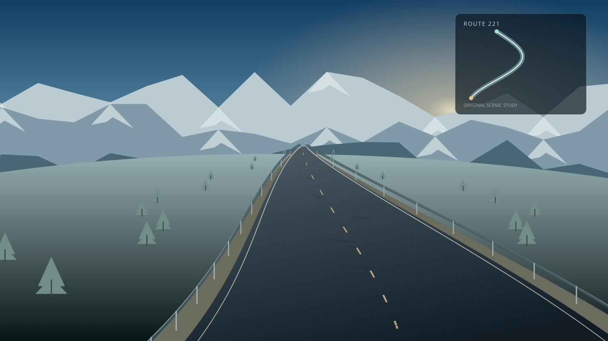
黎明高原ロングストレート
30 km経験値長距離雪晴れ・夜明け除雪済み舗装ソロ専用
夜明けの雪原を30 kmまっすぐ横切る。広い舗装路で高速巡航と変速を試せる。
完走ボーナス +4,200 XP
このコースを選ぶ霞浦・高速巡航路
5.82 km港湾標準明け方の海霧薄く濡れた岸壁舗装ソロ専用
岸壁の倉庫列と小さな灯台の間を走る。二つの大きな弧と直線で、高速域のライン取りとニトロ管理を練習できる。
完走ボーナス +820 XP
このコースを選ぶ霞浦・区間連結耐久
8.77 km港湾上級明け方の海霧薄く濡れた岸壁舗装（低グリップ区間あり）ソロ専用
岸壁の倉庫列と小さな灯台の間を走る。前半の連続コーナー、後半の高速区間を走りつなぐ。途中でグリップと勾配が変わる。
完走ボーナス +1,153 XP
このコースを選ぶ霞浦・マスター耐久
13.31 km港湾エキスパート明け方の海霧薄く濡れた岸壁舗装（低グリップ区間あり）ソロ専用
岸壁の倉庫列と小さな灯台の間を走る。高速区間、連続コーナー、摩擦の異なる区間を一度に走る。全区間で集中力を試す長距離コース。
完走ボーナス +1,726 XP
このコースを選ぶ朝陽岬・高速巡航路
5.885 km海岸標準朝焼け海沿いの乾燥舗装ソロ専用
朝日が当たる岬の護岸から灯台へ向かう。二つの大きな弧と直線で、高速域のライン取りとニトロ管理を練習できる。
完走ボーナス +793 XP
このコースを選ぶ朝陽岬・区間連結耐久
8.842 km海岸上級朝焼け海沿いの乾燥舗装（低グリップ区間あり）ソロ専用
朝日が当たる岬の護岸から灯台へ向かう。前半の連続コーナー、後半の高速区間を走りつなぐ。途中でグリップと勾配が変わる。
完走ボーナス +1,123 XP
このコースを選ぶ朝陽岬・マスター耐久
13.389 km海岸エキスパート朝焼け海沿いの乾燥舗装（低グリップ区間あり）ソロ専用
朝日が当たる岬の護岸から灯台へ向かう。高速区間、連続コーナー、摩擦の異なる区間を一度に走る。全区間で集中力を試す長距離コース。
完走ボーナス +1,694 XP
このコースを選ぶ撫子高原・高速巡航路
5.95 km草原標準初夏の快晴牧草地の乾燥舗装ソロ専用
高原の牧柵沿いを抜け、丘の上の計時塔を目指す。二つの大きな弧と直線で、高速域のライン取りとニトロ管理を練習できる。
完走ボーナス +796 XP
このコースを選ぶ撫子高原・区間連結耐久
8.879 km草原上級初夏の快晴牧草地の乾燥舗装（低グリップ区間あり）ソロ専用
高原の牧柵沿いを抜け、丘の上の計時塔を目指す。前半の連続コーナー、後半の高速区間を走りつなぐ。途中でグリップと勾配が変わる。
完走ボーナス +1,127 XP
このコースを選ぶ撫子高原・マスター耐久
13.433 km草原エキスパート初夏の快晴牧草地の乾燥舗装（低グリップ区間あり）ソロ専用
高原の牧柵沿いを抜け、丘の上の計時塔を目指す。高速区間、連続コーナー、摩擦の異なる区間を一度に走る。全区間で集中力を試す長距離コース。
完走ボーナス +1,697 XP
このコースを選ぶ曙門前・高速巡航路
5.98 km市街・里山標準夕暮れ補修跡のある里道ソロ専用
民家が並ぶ旧街道を走り、石垣の先で参道を抜ける。二つの大きな弧と直線で、高速域のライン取りとニトロ管理を練習できる。
完走ボーナス +820 XP
このコースを選ぶ曙門前・区間連結耐久
8.951 km市街・里山上級夕暮れ補修跡のある里道（低グリップ区間あり）ソロ専用
民家が並ぶ旧街道を走り、石垣の先で参道を抜ける。前半の連続コーナー、後半の高速区間を走りつなぐ。途中でグリップと勾配が変わる。
完走ボーナス +1,153 XP
このコースを選ぶ曙門前・マスター耐久
13.477 km市街・里山エキスパート夕暮れ補修跡のある里道（低グリップ区間あり）ソロ専用
民家が並ぶ旧街道を走り、石垣の先で参道を抜ける。高速区間、連続コーナー、摩擦の異なる区間を一度に走る。全区間で集中力を試す長距離コース。
完走ボーナス +1,726 XP
このコースを選ぶ春杉林・高速巡航路
6.045 km森林標準春雨雨で濡れた林道ソロ専用
濡れた杉林を抜け、石鳥居と斜面の間を通る。二つの大きな弧と直線で、高速域のライン取りとニトロ管理を練習できる。
完走ボーナス +845 XP
このコースを選ぶ春杉林・区間連結耐久
8.988 km森林上級春雨雨で濡れた林道（低グリップ区間あり）ソロ専用
濡れた杉林を抜け、石鳥居と斜面の間を通る。前半の連続コーナー、後半の高速区間を走りつなぐ。途中でグリップと勾配が変わる。
完走ボーナス +1,180 XP
このコースを選ぶ春杉林・マスター耐久
13.521 km森林エキスパート春雨雨で濡れた林道（低グリップ区間あり）ソロ専用
濡れた杉林を抜け、石鳥居と斜面の間を通る。高速区間、連続コーナー、摩擦の異なる区間を一度に走る。全区間で集中力を試す長距離コース。
完走ボーナス +1,755 XP
このコースを選ぶ紅葉谷・高速巡航路
6.075 km森林標準秋の晴天落ち葉が残る舗装ソロ専用
紅葉の谷を下り、石造りの参道沿いを走る。二つの大きな弧と直線で、高速域のライン取りとニトロ管理を練習できる。
完走ボーナス +835 XP
このコースを選ぶ紅葉谷・区間連結耐久
9.025 km森林上級秋の晴天落ち葉が残る舗装（低グリップ区間あり）ソロ専用
紅葉の谷を下り、石造りの参道沿いを走る。前半の連続コーナー、後半の高速区間を走りつなぐ。途中でグリップと勾配が変わる。
完走ボーナス +1,170 XP
このコースを選ぶ紅葉谷・マスター耐久
13.565 km森林エキスパート秋の晴天落ち葉が残る舗装（低グリップ区間あり）ソロ専用
紅葉の谷を下り、石造りの参道沿いを走る。高速区間、連続コーナー、摩擦の異なる区間を一度に走る。全区間で集中力を試す長距離コース。
完走ボーナス +1,744 XP
このコースを選ぶ翡翠竹林・高速巡航路
6.14 km森林標準朝靄湿り気のある山道ソロ専用
竹林の切通しを抜け、山腹の石垣に沿って登る。二つの大きな弧と直線で、高速域のライン取りとニトロ管理を練習できる。
完走ボーナス +848 XP
このコースを選ぶ翡翠竹林・区間連結耐久
9.097 km森林上級朝靄湿り気のある山道（低グリップ区間あり）ソロ専用
竹林の切通しを抜け、山腹の石垣に沿って登る。前半の連続コーナー、後半の高速区間を走りつなぐ。途中でグリップと勾配が変わる。
完走ボーナス +1,183 XP
このコースを選ぶ翡翠竹林・マスター耐久
13.644 km森林エキスパート朝靄湿り気のある山道（低グリップ区間あり）ソロ専用
竹林の切通しを抜け、山腹の石垣に沿って登る。高速区間、連続コーナー、摩擦の異なる区間を一度に走る。全区間で集中力を試す長距離コース。
完走ボーナス +1,759 XP
このコースを選ぶ漣水門・高速巡航路
6.205 km湖畔標準日没直後湖畔舗装と橋面ソロ専用
水門の手前で橋を渡り、湖を見下ろす舗装路を進む。二つの大きな弧と直線で、高速域のライン取りとニトロ管理を練習できる。
完走ボーナス +829 XP
このコースを選ぶ漣水門・区間連結耐久
9.134 km湖畔上級日没直後湖畔舗装と橋面（低グリップ区間あり）ソロ専用
水門の手前で橋を渡り、湖を見下ろす舗装路を進む。前半の連続コーナー、後半の高速区間を走りつなぐ。途中でグリップと勾配が変わる。
完走ボーナス +1,163 XP
このコースを選ぶ漣水門・マスター耐久
13.688 km湖畔エキスパート日没直後湖畔舗装と橋面（低グリップ区間あり）ソロ専用
水門の手前で橋を渡り、湖を見下ろす舗装路を進む。高速区間、連続コーナー、摩擦の異なる区間を一度に走る。全区間で集中力を試す長距離コース。
完走ボーナス +1,737 XP
このコースを選ぶ鉄峰採石場・高速巡航路
6.235 km山岳標準鉛色の曇天砕石の粉が残る舗装ソロ専用
採石場の壁と古い貨物線に囲まれた下りの道。二つの大きな弧と直線で、高速域のライン取りとニトロ管理を練習できる。
完走ボーナス +857 XP
このコースを選ぶ鉄峰採石場・区間連結耐久
9.206 km山岳上級鉛色の曇天砕石の粉が残る舗装（低グリップ区間あり）ソロ専用
採石場の壁と古い貨物線に囲まれた下りの道。前半の連続コーナー、後半の高速区間を走りつなぐ。途中でグリップと勾配が変わる。
完走ボーナス +1,193 XP
このコースを選ぶ鉄峰採石場・マスター耐久
13.732 km山岳エキスパート鉛色の曇天砕石の粉が残る舗装（低グリップ区間あり）ソロ専用
採石場の壁と古い貨物線に囲まれた下りの道。高速区間、連続コーナー、摩擦の異なる区間を一度に走る。全区間で集中力を試す長距離コース。
完走ボーナス +1,769 XP
このコースを選ぶ月影峠・高速巡航路
6.3 km山岳標準月明かり冷えた山岳舗装ソロ専用
月明かりを頼りに山荘のある斜面を登る。二つの大きな弧と直線で、高速域のライン取りとニトロ管理を練習できる。
完走ボーナス +857 XP
このコースを選ぶ月影峠・区間連結耐久
9.243 km山岳上級月明かり冷えた山岳舗装（低グリップ区間あり）ソロ専用
月明かりを頼りに山荘のある斜面を登る。前半の連続コーナー、後半の高速区間を走りつなぐ。途中でグリップと勾配が変わる。
完走ボーナス +1,193 XP
このコースを選ぶ月影峠・マスター耐久
13.776 km山岳エキスパート月明かり冷えた山岳舗装（低グリップ区間あり）ソロ専用
月明かりを頼りに山荘のある斜面を登る。高速区間、連続コーナー、摩擦の異なる区間を一度に走る。全区間で集中力を試す長距離コース。
完走ボーナス +1,769 XP
このコースを選ぶ霜花原・高速巡航路
6.33 km雪道標準雪晴れ圧雪が残る舗装ソロ専用
除雪された道をたどり、雪原に面した山荘を通過する。二つの大きな弧と直線で、高速域のライン取りとニトロ管理を練習できる。
完走ボーナス +875 XP
このコースを選ぶ霜花原・区間連結耐久
9.28 km雪道上級雪晴れ圧雪が残る舗装（低グリップ区間あり）ソロ専用
除雪された道をたどり、雪原に面した山荘を通過する。前半の連続コーナー、後半の高速区間を走りつなぐ。途中でグリップと勾配が変わる。
完走ボーナス +1,213 XP
このコースを選ぶ霜花原・マスター耐久
13.82 km雪道エキスパート雪晴れ圧雪が残る舗装（低グリップ区間あり）ソロ専用
除雪された道をたどり、雪原に面した山荘を通過する。高速区間、連続コーナー、摩擦の異なる区間を一度に走る。全区間で集中力を試す長距離コース。
完走ボーナス +1,791 XP
このコースを選ぶ星穴試験場・区間連結耐久
9.352 kmサーキット上級晴れた夜均一なテスト舗装（低グリップ区間あり）ソロ専用
照明のある試験場を走り、ピットと観客席の脇を通る。前半の連続コーナー、後半の高速区間を走りつなぐ。途中でグリップと勾配が変わる。
完走ボーナス +1,157 XP
このコースを選ぶ星穴試験場・マスター耐久
13.899 kmサーキットエキスパート晴れた夜均一なテスト舗装（低グリップ区間あり）ソロ専用
照明のある試験場を走り、ピットと観客席の脇を通る。高速区間、連続コーナー、摩擦の異なる区間を一度に走る。全区間で集中力を試す長距離コース。
完走ボーナス +1,730 XP
このコースを選ぶ